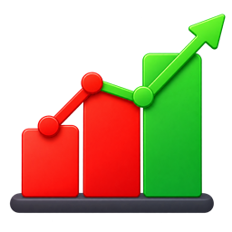

Camadas
Mapa base
Legenda
Gráficos
O gráfico abre no Analytics (Resumo), com o agrupamento escolhido lá: agrupar por, operador e métrica.
Tipo de gráfico
Filtro
Mostrar feições que atendem a
Filtros salvos
Propriedades da camada
Pesquisa avançada

Analytics
Nenhuma feição no conjunto atual.